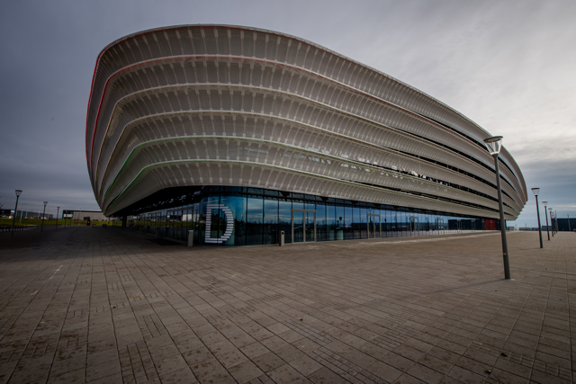

A teke hazatér!
Május 22. és június 7. között Székesfehérvár a kilenctűs teke nemzetközi központjává válik, hiszen a város ad otthont a 2025-ös kilenctűs teke világbajnokságnak. Ezen a rangos eseményen nem csak női és férfi válogatott mérkőzések lesznek, hanem U15-ös és U19-es korosztály világbajnoksága is.
Pintyőke Marcell, a Magyar és a Nemzetközi Bowling Szövetség elnöke elmondta: „A világbajnokság szlogenje: „Ninepin hazatér”. Szeretnénk egy különleges és emlékezetes eseményt szervezni, hogy megmutassuk, Magyarország továbbra is a kilenctűs teke hazája.”

Zalaegerszeg 2013
Mindkét csapatunk világbajnoki címet szerzett a Zalaegerszegen zajló teke csapat-világbajnokságon. A döntőben férfiegyüttesünk Macedóniát, női csapatunk Romániát múlta felül. Már szombat délelőtt megkezdődött a sikersorozat. A Fehér László szövetségi kapitány irányította férfi válogatott az elődöntőben 0-2-ről felállva, 6-2-re győzött a románok ellen. Következtek a döntőben azok a macedónok, akik a szerbekkel vívtak nagy csatát a legjobb négy között, és végül nyertek.
A két döntőt egyszerre bonyolították le a zalaegerszegi Városi Sportcsarnokban felállított nyolcsávos pályán. Kaszás Zoltán szövetségi kapitány vezette női válogatott gyorsan hátrányba került a finálé elején, majd csak lassan fordult a kocka, de a végére a Méhész Anita, Sáfrány Anita páros már magyar vezetésnél vette át a meccset. A két Anita keze a folytatásban nem remegett meg, így címvédés lett a vége.
A férfiak döntőjében hatalmasat versenyzett Kiss Tamás, Karsai László és Boanta Claudiu is, és a válogatott mindegyik tagja igazolta azt, hogy ebben a sportágban a magyarok világklasszisoknak számítanak. A világrekorddal megkoronázták a vb-n nyújtott teljesítményüket.
WCH 2025
Május 22. és június 7. között Székesfehérváron mérik össze tudásukat a világ legjobb kilenctűs tekézői, ugyanis a Királyok Városa ad otthont az idei kilenctűs teke világbajnokságnak.Cser-Palkovics András polgármester kiemelte, hogy ez a rendezvény több, mint egy nagy sportverseny a város számára: "A kilencpines bowling hagyományosan népszerű sport Székesfehérváron. Bízunk benne, hogy ez a világméretű esemény maradandó élményt nyújt a sportolóknak és a nézőknek egyaránt."
A polgármester hozzátette, örömmel fogadták a kilenctűs teketársadalom megközelítését:„A MET Aréna elsősorban a Hydro Fehérvár AV19 otthona, de ideális helyszín lehet különböző sportágak versenyeinek lebonyolítására – akár nemzetközi szinten is. Ezért is örültünk, hogy megkeresett minket a Magyar Kilenctűs Bowling Szövetség, és már hónapok óta karöltve dolgozunk a szervezőkkel, hogy a színfalak mögött is színvonalas maradhasson. versengő nemzetek és remélhetőleg a látogatók nagy száma.”"Kiemelt szerepet tölt be a város életében a Ninepin Bowling. A megújult Köfém SC tekepályának és a közösségi sportolási lehetőségek bővülésének köszönhetően ez a fantasztikus sportág a helyi lakosok számára is elérhetővé válik. Az új fejlesztések nemcsak a profi sportolók számára biztosítanak kiváló feltételeket, hanem új távlatokat nyitnak az utánpótlás fejlődése és a szabadidős játékosok számára is" - mondta Cser-Palkovics.
A világbajnokságot az teszi különlegessé, hogy nemcsak a felnőtt csapat világbajnokságokat, hanem az U15-ös és U19-es korosztály jelentős versenyeit is magában foglalja. A május 22. és június 7. között megrendezett tornán a világ legjobb kilenctűs tekézői érkeznek Székesfehérvárra.
Válogatott keret
Játékos hozzáadás